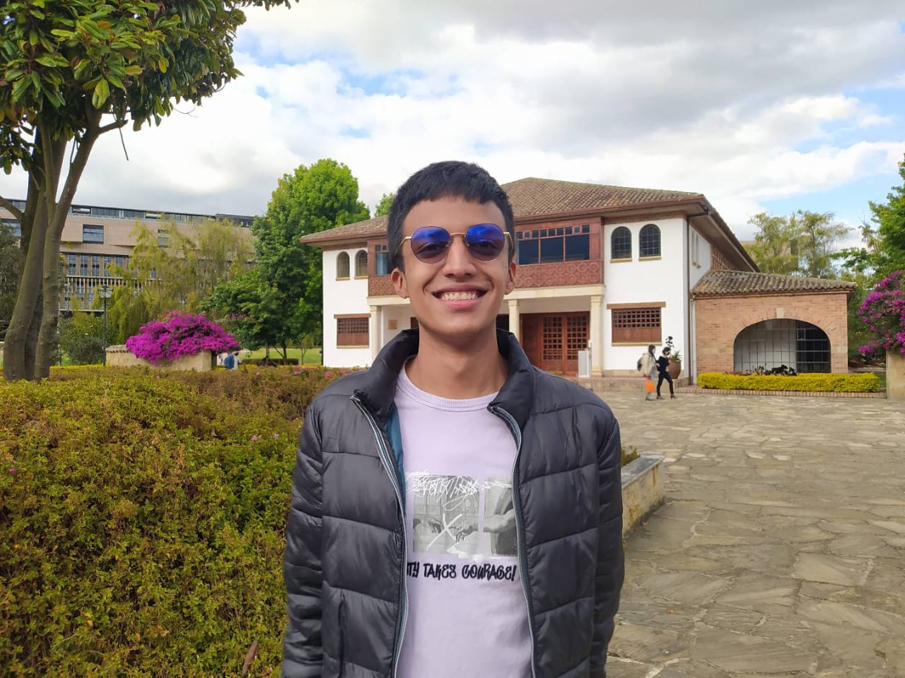
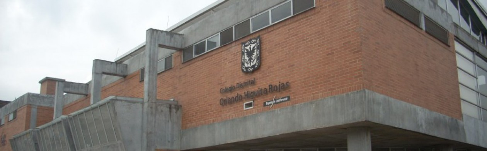
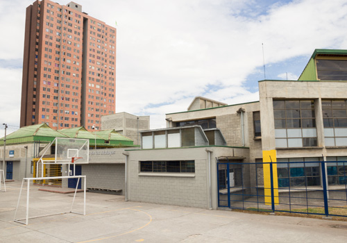
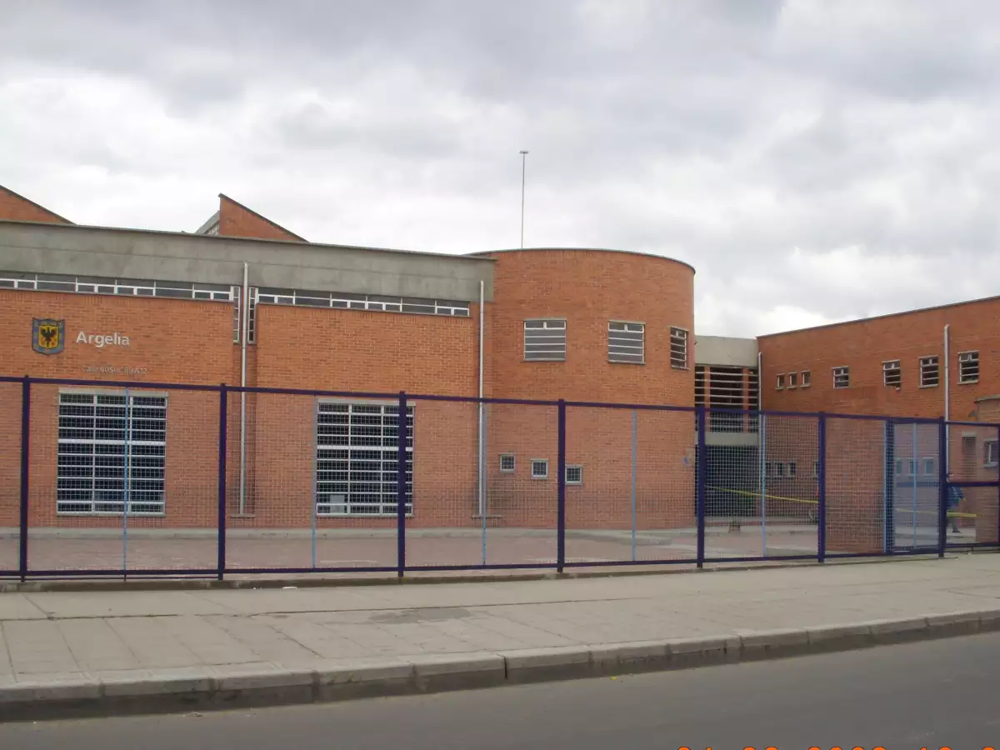
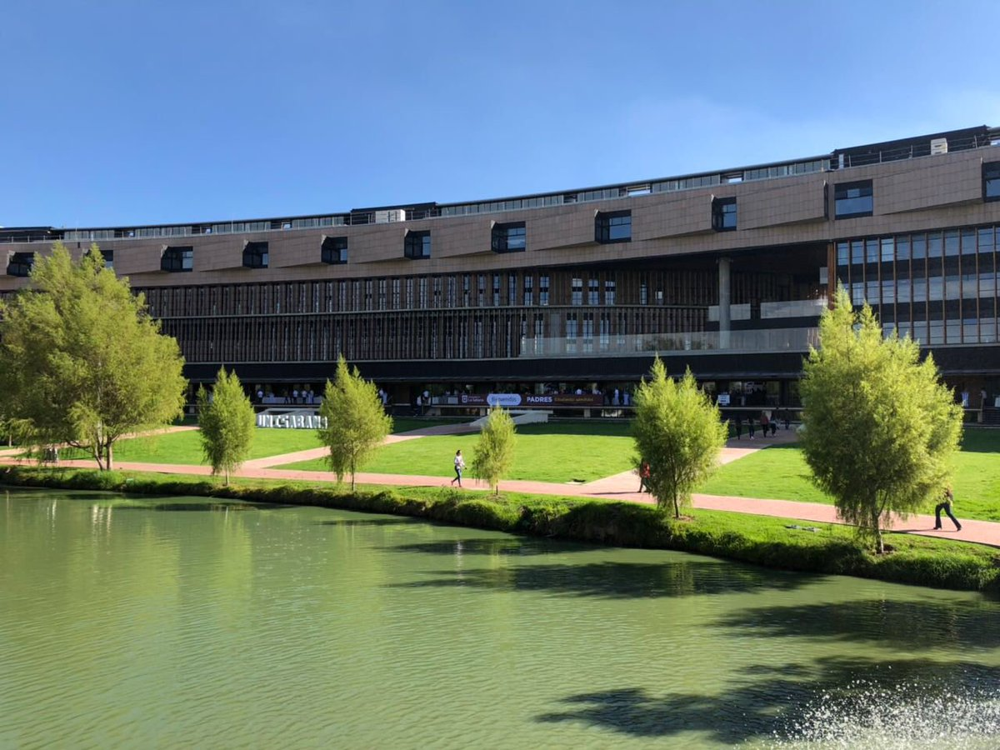

Bienvenido
Soy Nicolas Ortiz, estudiante de tercer semestre de la carrera de Ingeniería
informática, me gusta la música, series, películas y todo lo relacionado con la tecnología, a lo
largo de este blog te iré contando más acerca de mi y todas las experiencias que he vivido durante
mis 18 años de vida.

Mis primeros años
Para ser sinceros no recuerdo mucho de mis primeros años de vida, pero mis recuerdos comienzan de
aproximadamente cuando tenia 5 años, donde estoy en la misma casa donde he vivido toda mi vida,
además donde comenzó mi primera formación académica y personal, por medio de mis papas que me
inculcaron sus valores y principios desde temprana edad, para después entrar al jardín donde comencé
a aprender a relacionarme con los demás.
Mi etapa en el colegio
Mi etapa estudiantil fue de bastantes cambios, comencé a estudiar en el colegio Orlando Higuita rojas
donde cursé desde grado 0 hasta segundo, allí aprendí a leer, sumar, multiplicar, etc. Todo lo
básico que un niño aprende en sus primeros años de escuela, además comencé a entender más el mundo y
todo lo que me rodeaba, también forme mis primeras grandes amistades con las que lamentablemente hoy
en día tomamos rumbos distintos. No obstante, mi comportamiento no fue el mejor en este.

Debido a que el colegio donde estaba no tenia el mejor ambiente ni educación, mis padres decidieron
cambiarme a una mejor institución, al colegio Santiago de las Atalayas, donde curse tercero y parte
de cuarto. Allí, fue un cambio abrupto en el nivel de educación, mejoré bastante mi nivel académico
y adquirí mejores valores y enseñanzas, no obstante, me volví una persona mucho más reservada.

Por último, mis papas querían que yo y mi hermana estudiáramos juntos, por lo que en grado cuarto
volví a cambiar de colegio, esta vez al colegio Argelia, donde finalmente me gradué, allí conocí a
la mayoría de mis amistades cercanas y viví las mayores experiencias que me han formado quien soy,
además me seguí formando académicamente y gracias a mis resultados en el ICFES puede ganarme la beca
Generación E, la cual me brindaba la posibilidad de elegir donde y que estudiar, por lo que llego el
momento de cuestionarme ¿Qué debería estudiar

Comienzo de la Universidad
Ahora bien, cuando llego el momento de elegir que debería estudiar, no lo tenia muy claro, me
gustaban los temas de astronomía y el espacio, pero lastimosamente en Colombia las ciencias no son
muy apoyadas y solo una universidad en Medellín tenia esta carrera, por lo que la descarte. Por otro
lado, a mi siempre me han llamado la atención los temas relacionados con la tecnología, por lo que
busque una carrera donde pudiera trabajar en este sector y encontré la ingeniería de sistemas –
informática, al ver todos los campos de acción y las materias a cursar, me decidí por esta.
Despuesto, llego el momento de elegir la universidad, mi decisión estaba entre los andes y la
sabana, ambas muy buenas universidades, aunque la universidad de la Sabana se encuentra mucho más
lejos de mi hogar me decidí por esta, el enfoque que le da la universidad esta carrera me motivo a
elegirla, además que ya tiempo atrás venia conociendo la universidad por una corporación llamada
Monte verde en el que me encontraba. Hasta el momento creo que fue la mejor decisión, ya que a nivel
académico es excelente y a nivel personal he conocido grandes personas, también siento que cada día
me formo mejor como persona y espero poder terminar mis estudios acá.

¿Qué me espera?
A corto plazo, me gustaría adquirir a un más conocimiento en el área de la programación, no solo por
medio de la universidad, sino también por cursos o certificados que pueda realizar, también, espero
poder encontrar un área en la que enfocarme, además me gustaría mejorar mucho más mi nivel de inglés
y comenzar a adquirir experiencia laboral. No obstante, a largo plazo no tengo muy claro mi futuro,
ni a nivel personal o académico, aunque aspiro a seguir formándome académicamente, si es posible
llegando al nivel de doctorado en alguna universidad en el exterior.